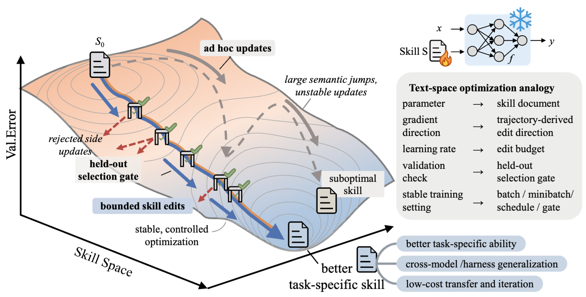
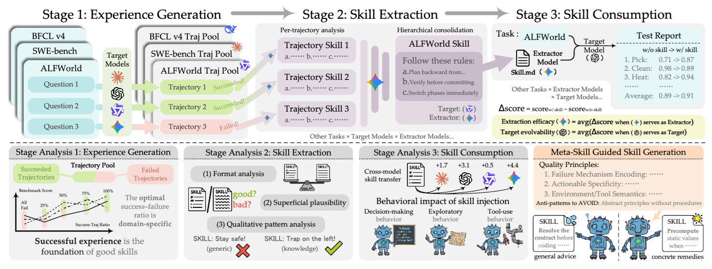
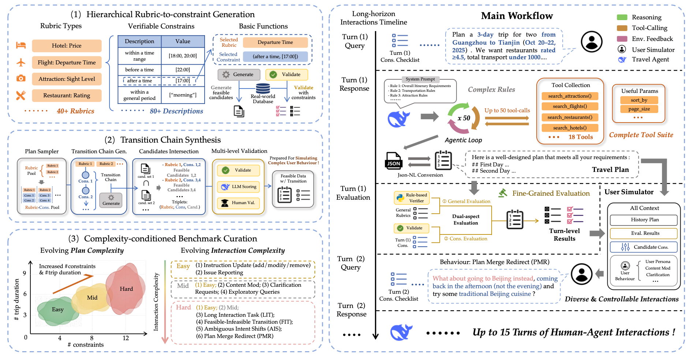
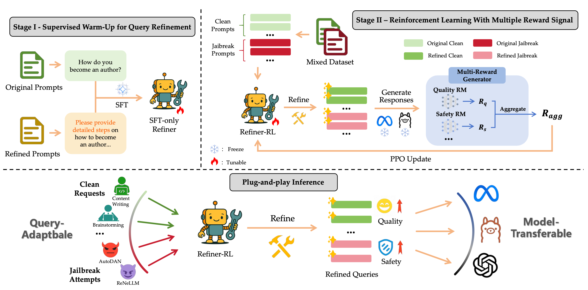

Zisu Huang
Hi! I'm Zisu Huang (黄子骕), a first-year M.S. student in Computer Science at Fudan University, and a member of Fudan NLP Group, advised by Assoc. Prof. Xiaoqing Zheng and Prof. Xuanjing Huang. I earned my B.E. in Software Engineering from Fudan University in 2025. I am currently a research intern at Microsoft Research Asia working with Yifan Yang.
My research centers on AI agents — building capable, autonomous agents that can self-improve, and enabling them to reliably solve complex real-world tasks. In particular, I focus on:
- Personalized agents: developing more effective personalized agents through both model training and external system optimization, such as persistent memory.
-
Agent evolution:
- Parametric evolution: improving agentic capabilities through parameter updates, approached from both data-centric and algorithm-centric perspectives.
- Non-parametric evolution: expanding the capability boundary of agents in a training-free manner, e.g., through agent skills, orchestration, and harness design.
News
-
Released two new works on agent skills — SkillOpt and SkillLens. SkillOpt sparked a lot of community discussion — thanks for the support!
-
TRIP-Bench accepted to ICML 2026.
-
New survey out — Reward Hacking in the Era of Large Models: Mechanisms, Emergent Misalignment, Challenges.
-
SteeM accepted to ACL 2026 (Main Conference).
-
Started a research internship at the Visual Computing Group, Microsoft Research Asia (Shanghai).
-
RECAST accepted to ICLR 2026.
-
Two papers accepted to EMNLP 2025 — SATER and FedQSN.
Selected Papers ( * denotes equal contribution )
-

-

-

-

See the full list on my Google Scholar.